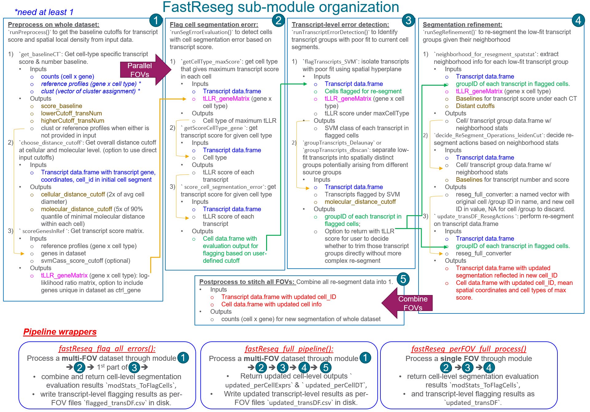

FastReseg to detect and correct segmentation error in spatial transcriptome data
Lidan Wu
2025-08-09
Source:vignettes/tutorial.Rmd
tutorial.RmdThis tutorial below shows how to apply functions in
FastReseg to perform segmentation error detection and
correction in spatial transcriptome data.
FastReseg workflow diagram
FastReseg package processes spatial transcriptome data
through 5 different modules and provides 3 wrapper functions for
streamline processing of multi-FOV dataset to different exit points.

Input data
The required inputs include:
counts: a cell-by-gene counts matrix for entire dataset.clust: a vector of cluster assignments for each cell incounts; useNULLto automatically assign the cell cluster for each cell based on maximum transcript score of given the providedrefProfiles.refProfiles: a gene-by-cluster matrix of cluster-specific expression profiles; default =NULLto use external cluster assignments.-
transDF_fileInfo: a data.frame with each row for each individual file of per-FOV transcript data.frame, columns include the file path of per FOV transcript data.frame file, annotation columns likeslideandfovto be used as prefix when creating unique cell_ID across entire dataset.- when
NULL, use the transcript data.frametranscript_dfdirectly.
- when
There must be at least one of the clust and
refProfiles provided to run the FastReseg
pipeline. All the spatial coordinates and distance are in the units of
micron for consistency. Please refer to example data coming with the
package to see how it looks like.
# load example input data from package
library(FastReseg)
# get cell-by-gene `counts`
data("example_CellGeneExpr")
counts <- example_CellGeneExpr
# get cluster assignment `clust`
data("example_clust")
clust <- example_clust
# get cluster-specific reference profiles `refProfiles`
data("example_refProfiles")
refProfiles <- example_refProfiles
# create `transDF_fileInfo` for multiple per FOV transcript data.frame
# coordinates for each FOV, `stage_x` and `stage_y`, should have units in micron.
dataDir <- system.file("extdata", package = "FastReseg")
transDF_fileInfo <- data.frame(file_path = fs::path(dataDir,
c("Run4104_FOV001__complete_code_cell_target_call_coord.csv",
"Run4104_FOV002__complete_code_cell_target_call_coord.csv")),
slide = c(1, 1),
fov = c(1,2),
stage_X = 1000*c(5.13, -2.701),
stage_Y = 1000*c(-0.452, 0.081))Here is an example of per-FOV transcript data.frame with necessary columns for:
targetfor gene name;x,yand optionalzfor spatial coordinates of each transcript;-
UMI_cellIDfor cell ids of current cell segmentation and must be unique across all FOVs of the same dataset;- When not available,
prepare_perFOV_transDF()function would use per-FOV uniqueCellIdand the providedprefix_colns = c('slide', 'fov')to generateUMI_cellIDthat would be unique across the entire dataset. Pipeline wrappers,fastReseg_flag_all_errors()andfastReseg_full_pipeline(), would also generate unique cell ids in same manner for the multiple files listed intransDF_fileInfo.
- When not available,
-
UMI_transID: transcript ids that are unique across the dataset;- By default, the
prepare_perFOV_transDF()function and the 2 pipeline wrappers would use row index of transcript in each per-FOV transcript data.frame andUMI_cellIDto createUMI_transIDthat would be unique across the entire dataset.
- By default, the
| UMI_transID | UMI_cellID | x | y | z | target | slide | fov | CellId |
|---|---|---|---|---|---|---|---|---|
| t_1_2_10 | c_1_2_5 | 914.8070 | -7832.786 | 2.4 | HLA-DRA | 1 | 2 | 5 |
| t_1_2_100005 | c_1_2_1270 | 841.7000 | -8045.011 | 2.4 | HLA-E | 1 | 2 | 1270 |
| t_1_2_100006 | c_1_2_1270 | 844.4609 | -8045.006 | 2.4 | TWIST1 | 1 | 2 | 1270 |
| t_1_2_100007 | c_1_2_1286 | 878.1635 | -8045.002 | 2.4 | HLA-B | 1 | 2 | 1286 |
| t_1_2_10001 | c_1_2_201 | 1018.2337 | -7859.833 | 2.4 | S100A6 | 1 | 2 | 201 |
| t_1_2_100015 | c_1_2_1292 | 885.8180 | -8045.029 | 2.4 | HBB | 1 | 2 | 1292 |
As mentioned above, FastReseg package provides 2
pipeline wrappers for streamline multi-FOV processing and those wrapper
would go through each per-FOV transcript data.frame listed in
transDF_fileInfo and stitch all FOVs together to get data
with coordinates in the global system as well as transcript and cell IDs
unique across the entire dataset. When preparing the per-FOV data.frame
outside the pipeline wrappers, one can read in each per-FOV file and
process it with prepare_perFOV_transDF() function to get
the unique IDs for cells and transcripts as well as converting the local
coordinates in pixel for each FOV to a global coordinate in micron for
entire dataset.
# process 1st file in the `transDF_fileInfo` entry
idx = 1
rawDF <- read.csv(transDF_fileInfo[idx, 'file_path'])
head(rawDF, n = 3L)
#> fov seed_x seed_y x y z std_x std_y
#> 1 1 866.0 1250.5 865.9666 1250.467 1 0.1366284 0.1365927
#> 2 1 1026.8 1250.6 1026.7778 1250.656 1 0.1202107 0.1424117
#> 3 1 1008.0 1250.9 1008.0501 1250.933 1 0.1378334 0.1365927
#> X95_perc_conf_int_x X95_perc_conf_int_y target target_idx Spot1_count
#> 1 0.2867654 0.2866904 AXL 70 1
#> 2 0.1848043 0.2189347 IL16 506 3
#> 3 0.2892946 0.2866905 S100A6 846 1
#> Spot2_count Spot3_count Spot4_count target_call_observations
#> 1 2 2 1 6
#> 2 2 3 1 9
#> 3 2 2 1 6
#> target_count_per_feature random_call_probability possible_BC_count
#> 1 1 0.002597012 1
#> 2 1 0.002597012 1
#> 3 1 0.010347653 4
#> spots_per_feature multicolor_spots_per_feature call_quality_score CellId
#> 1 4 0 0.0001604543 2932
#> 2 4 0 0.0019040769 864
#> 3 5 0 0.0001396453 0
#> CellComp transcript_id
#> 1 Nuclear 11356
#> 2 Nuclear 11359
#> 3 0 11363
transcript_df_all <- prepare_perFOV_transDF(each_transDF = rawDF,
fov_centerLocs = unlist(transDF_fileInfo[idx, c('stage_X', 'stage_Y')]),
prefix_vals = unlist(transDF_fileInfo[idx, c('slide', 'fov')]),
pixel_size = 0.12, # micron per pixel
zstep_size = 0.8, # micron per z step
transID_coln = NULL, # use row index
transGene_coln = 'target', # gene name
cellID_coln = 'CellId', # cell label unique at FOV level
spatLocs_colns = c('x', 'y', 'z'), # column names for spatial coordinates in pixel for each FOV
invert_y = TRUE, # flip Y axis (default = TRUE) between local image coordinate and global stage coordinate
extracellular_cellID = 0, # set this to the cell ID for extracellular transcript, use NULL if your data only contains intracellular transcripts
drop_original = TRUE) # set to FALSE if want to have columns for original cell ID and spatial coordinates returned in the data.frame
str(transcript_df_all)
#> List of 2
#> $ intraC:'data.frame': 151712 obs. of 6 variables:
#> ..$ UMI_cellID : chr [1:151712] "c_1_1_2932" "c_1_1_864" "c_1_1_2923" "c_1_1_864" ...
#> ..$ UMI_transID: chr [1:151712] "t_1_1_1" "t_1_1_2" "t_1_1_5" "t_1_1_6" ...
#> ..$ target : chr [1:151712] "AXL" "IL16" "HSP90AA1" "MZT2A" ...
#> ..$ x : num [1:151712] 5234 5253 5196 5252 5192 ...
#> ..$ y : num [1:151712] -602 -602 -602 -602 -602 ...
#> ..$ z : num [1:151712] 0.8 0.8 0.8 0.8 0.8 0.8 0.8 0.8 0.8 0.8 ...
#> $ extraC:'data.frame': 110792 obs. of 6 variables:
#> ..$ UMI_cellID : chr [1:110792] "c_1_1_0" "c_1_1_0" "c_1_1_0" "c_1_1_0" ...
#> ..$ UMI_transID: chr [1:110792] "t_1_1_3" "t_1_1_4" "t_1_1_8" "t_1_1_10" ...
#> ..$ target : chr [1:110792] "S100A6" "IFI27" "HLA-A" "SOD2" ...
#> ..$ x : num [1:110792] 5251 5192 5306 5251 5269 ...
#> ..$ y : num [1:110792] -602 -602 -602 -602 -603 ...
#> ..$ z : num [1:110792] 0.8 0.8 0.8 0.8 0.8 0.8 0.8 0.8 0.8 0.8 ...
## we would focus on intracellular transcripts for downstream segmentation error detection
transcript_df <- transcript_df_all[["intraC"]]Pipeline wrapper functions for streamline processing
For streamline processing of big dataset with multiple FOVs, one can
use the pipeline wrapper functions provided in the
FastReseg package without going through the individual
steps that are discussed in later part of this tutorial. Those pipeline
wrappers would preprocess at whole dataset level first to get
appropriate cutoffs, and then perform segmentation evaluation and
optional correction on each FOV, followed by combining per FOV data into
one. Please refer to the manual of each pipeline wrapper for more
details and to section Processing each FOV
outside of core wrapper for excerpts of example outputs.
Pipeline wraper for cell-level segmentation detection across multi-FOV dataset
A common use case of FastReseg is to evaluate the
current cell segmentation of entire multi-FOV dataset and then identify
the transcripts with poor goodness-of-fit to current cell and thus
likely arsing from potential neighborhood contamination. And this could
be done with fastReseg_flag_all_errors() function.
flagAll_res <- fastReseg_flag_all_errors(
counts = counts,
clust = clust,
refProfiles = NULL,
# Similar to `runPreprocess()`, one can use `clust = NULL` if providing `refProfiles`
transcript_df = NULL,
transDF_fileInfo = transDF_fileInfo,
filepath_coln = 'file_path',
prefix_colns = c('slide','fov'),
fovOffset_colns = c('stage_Y','stage_X'), # match XY axes between stage and each FOV
pixel_size = 0.18,
zstep_size = 0.8,
transID_coln = NULL, # row index as transcript_id
transGene_coln = "target",
cellID_coln = "CellId",
spatLocs_colns = c("x","y","z"),
extracellular_cellID = c(0),
flagCell_lrtest_cutoff = 5, # cutoff for flagging wrongly segmented cells
svmClass_score_cutoff = -2, # cutoff for low vs. high transcript score
path_to_output = "res1f_multiFiles", # path to output folder
return_trimmed_perCell = TRUE, # flag to return per cell expression matrix after trimming all flagged transcripts
ctrl_genes = NULL # name for control probes in transcript data.frame, e.g. negative control probes
)
str(flagAll_res)
#> num [1:960, 1:14] 1.00e-04 3.28e-04 4.19e-04 1.35e-04 8.07e-05 ...
#> ..- attr(*, "dimnames")=List of 2
#> .. ..$ : chr [1:960] "AATK" "ABL1" "ABL2" "ACE" ...
#> .. ..$ : chr [1:14] "c" "e" "f" "b" ...
#> $ baselineData :List of 2
#> ..$ span_score : num [1:14, 1:5] 0 -1.508 -1.842 -1.806 -0.451 ...
#> .. ..- attr(*, "dimnames")=List of 2
#> .. .. ..$ : chr [1:14] "a" "b" "c" "e" ...
#> .. .. ..$ : chr [1:5] "0%" "25%" "50%" "75%" ...
#> ..$ span_transNum: num [1:14, 1:5] 1 9 16 24 58 13 1 18 1 1 ...
#> .. ..- attr(*, "dimnames")=List of 2
#> .. .. ..$ : chr [1:14] "a" "b" "c" "e" ...
#> .. .. ..$ : chr [1:5] "0%" "25%" "50%" "75%" ...
#> $ combined_modStats_ToFlagCells:'data.frame': 724 obs. of 9 variables:
#> ..$ transcript_num : int [1:724] 438 708 405 505 360 406 408 500 538 387 ...
#> ..$ modAlt_rsq : num [1:724] 0.0497 0.0257 0.0519 0.0122 0.0305 ...
#> ..$ lrtest_ChiSq : num [1:724] 22.32 18.46 21.57 6.18 11.16 ...
#> ..$ lrtest_Pr : num [1:724] 0.00792 0.03016 0.01035 0.72192 0.26483 ...
#> ..$ UMI_cellID : chr [1:724] "c_1_1_1008" "c_1_1_1027" "c_1_1_1042" "c_1_1_1058" ...
#> ..$ lrtest_nlog10P : num [1:724] 2.101 1.52 1.985 0.142 0.577 ...
#> ..$ tLLR_maxCellType: chr [1:724] "e" "e" "c" "e" ...
#> ..$ flagged : logi [1:724] FALSE FALSE FALSE FALSE FALSE FALSE ...
#> ..$ file_idx : int [1:724] 1 1 1 1 1 1 1 1 1 1 ...
#> $ combined_flaggedCells :List of 2
#> ..$ : chr [1:34] "c_1_1_1185" "c_1_1_1188" "c_1_1_1232" "c_1_1_1261" ...
#> ..$ : chr [1:2] "c_1_2_2659" "c_1_2_2733"
#> $ trimmed_perCellExprs :Formal class 'dgCMatrix' [package "Matrix"] with 6 slots
#> .. ..@ i : int [1:119728] 29 35 41 48 55 58 60 66 71 75 ...
#> .. ..@ p : int [1:755] 0 177 462 638 860 1028 1215 1372 1613 1844 ...
#> .. ..@ Dim : int [1:2] 960 754
#> .. ..@ Dimnames:List of 2
#> .. .. ..$ : chr [1:960] "AATK" "ABL1" "ABL2" "ACE" ...
#> .. .. ..$ : chr [1:754] "c_1_1_1008" "c_1_1_1027" "c_1_1_1042" "c_1_1_1058" ...
#> .. ..@ x : num [1:119728] 1 1 1 1 1 2 1 1 12 2 ...
#> .. ..@ factors : list()
# outputs in output folder
list.files("res1f_multiFiles")
#> [1] "1_classDF_ToFlagTrans.csv" "1_flagged_transDF.csv"
#> [3] "1_modStats_ToFlagCells.csv" "2_classDF_ToFlagTrans.csv"
#> [5] "2_flagged_transDF.csv" "2_modStats_ToFlagCells.csv"fastReseg_flag_all_errors() function takes similar input
arguments as prepare_perFOV_transDF() and
runPreprocess() (discussed in section Preprocess on whole dataset). It
does dataset preprocessing before segmentation error detection. The
function returns a list of outputs including
combined_modStats_ToFlagCells, which is a data.frame for
spatial modeling statistics of cell-level segmentation evaluation (see
section Flag
cells with putative segmentation errors for an excerpt), and
combined_flaggedCells, which contains cell IDs for all
cells flagged with potential cell segmentation errors in the dataset.
fastReseg_flag_all_errors() function also exports the
per-FOV outputs as 3 individual files per FOV under
path_to_output directory.
| variable | description |
|---|---|
flagged_transDF
|
a transcript data.frame for each FOV, with columns for unique IDs of
transcripts UMI_transID and cells UMI_cellID,
for global coordiante system x, y,
z, and for the goodness-of-fit in original cell segment
SVM_class
|
modStats_ToFlagCells
|
a data.frame for spatial modeling statistics of each cell, output of
runSegErrorEvaluation() function
|
classDF_ToFlagTrans
|
data.frame for the class assignment of transcripts within putative
wrongly segmented cells, output of flag_bad_transcripts()
function
|
One can simply trim off the transcripts with low goodness-of-fit to
current segmentation from the flagged_transDF by removing
the transcripts with SVM_class = 0. Conveniently,
fastReseg_flag_all_errors() would also return
trimmed_perCellExprs, the gene x cell count matrix where
all putative contaminating transcripts are trimmed, when
return_trimmed_perCell = TRUE.
Full pipeline segmentation detection and refinement across multi-FOV dataset
To perform full pipeline on the entire dataset with more complex
segmentation refinement actions, like splitting, merging and trimming,
one can use fastReseg_full_pipeline() pipeline wrapper.
refineAll_res <- fastReseg_full_pipeline(
counts = counts,
clust = clust,
refProfiles = NULL,
# Similar to `runPreprocess()`, one can use `clust = NULL` if providing `refProfiles`
transcript_df = NULL,
transDF_fileInfo = transDF_fileInfo,
filepath_coln = 'file_path',
prefix_colns = c('slide','fov'),
fovOffset_colns = c('stage_Y','stage_X'),
pixel_size = 0.18,
zstep_size = 0.8,
transID_coln = NULL,
transGene_coln = "target",
cellID_coln = "CellId",
spatLocs_colns = c("x","y","z"),
extracellular_cellID = c(0),
# Similar to `runPreprocess()`, one can set various cutoffs to NULL for automatic calculation from input data
# distance cutoff for neighborhood searching at molecular and cellular levels, respectively
molecular_distance_cutoff = 2.7,
cellular_distance_cutoff = NULL,
# cutoffs for transcript scores and number for cells under each cell type
score_baseline = NULL,
lowerCutoff_transNum = NULL,
higherCutoff_transNum= NULL,
imputeFlag_missingCTs = TRUE,
# Settings for error detection and correction, refer to `runSegRefinement()` for more details
flagCell_lrtest_cutoff = 5, # cutoff to flag for cells with strong spatial dependcy in transcript score profiles
svmClass_score_cutoff = -2, # cutoff of transcript score to separate between high and low score classes
groupTranscripts_method = "dbscan",
spatialMergeCheck_method = "leidenCut",
cutoff_spatialMerge = 0.5, # spatial constraint cutoff for a valid merge event
path_to_output = "res2_multiFiles",
save_intermediates = TRUE, # flag to return and write intermediate results to disk
return_perCellData = TRUE, # flag to return per cell level outputs from updated segmentation
combine_extra = FALSE # flag to include trimmed and extracellular transcripts in the exported `updated_transDF.csv` files
)
str(refineAll_res)
#> 60, 1:14] 1.00e-04 3.28e-04 4.19e-04 1.35e-04 8.07e-05 ...
#> ..- attr(*, "dimnames")=List of 2
#> .. ..$ : chr [1:960] "AATK" "ABL1" "ABL2" "ACE" ...
#> .. ..$ : chr [1:14] "c" "e" "f" "b" ...
#> $ baselineData :List of 2
#> ..$ span_score : num [1:14, 1:5] 0 -1.508 -1.842 -1.806 -0.451 ...
#> .. ..- attr(*, "dimnames")=List of 2
#> .. .. ..$ : chr [1:14] "a" "b" "c" "e" ...
#> .. .. ..$ : chr [1:5] "0%" "25%" "50%" "75%" ...
#> ..$ span_transNum: num [1:14, 1:5] 1 9 16 24 58 13 1 18 1 1 ...
#> .. ..- attr(*, "dimnames")=List of 2
#> .. .. ..$ : chr [1:14] "a" "b" "c" "e" ...
#> .. .. ..$ : chr [1:5] "0%" "25%" "50%" "75%" ...
#> $ cutoffs_list :List of 5
#> ..$ score_baseline : Named num [1:14] -1.473 -1.299 -1.171 -1.05 -0.979 ...
#> .. ..- attr(*, "names")= chr [1:14] "c" "e" "f" "b" ...
#> ..$ lowerCutoff_transNum : Named num [1:14] 261 239.2 45.5 102.5 3 ...
#> .. ..- attr(*, "names")= chr [1:14] "c" "e" "f" "b" ...
#> ..$ higherCutoff_transNum : Named num [1:14] 445 484 95 131 22 ...
#> .. ..- attr(*, "names")= chr [1:14] "c" "e" "f" "b" ...
#> ..$ cellular_distance_cutoff : num 19.2
#> ..$ molecular_distance_cutoff: num 2.7
#> $ updated_perCellDT :Classes 'data.table' and 'data.frame': 754 obs. of 6 variables:
#> ..$ updated_cellID : chr [1:754] "c_1_1_1008" "c_1_1_1027" "c_1_1_1042" "c_1_1_1058" ...
#> ..$ updated_celltype: chr [1:754] "e" "e" "c" "e" ...
#> ..$ x : num [1:754] -186 -220 -298 -306 -317 ...
#> ..$ y : num [1:754] 4869 4864 4862 4855 4854 ...
#> ..$ z : num [1:754] 3.28 2.72 2.79 2.95 2.84 ...
#> ..$ reSeg_action : chr [1:754] "none" "none" "none" "none" ...
#> ..- attr(*, ".internal.selfref")=<externalptr>
#> $ updated_perCellExprs:Formal class 'dgCMatrix' [package "Matrix"] with 6 slots
#> .. ..@ i : int [1:119731] 29 35 41 48 55 58 60 66 71 75 ...
#> .. ..@ p : int [1:755] 0 177 462 638 860 1028 1215 1372 1613 1844 ...
#> .. ..@ Dim : int [1:2] 960 754
#> .. ..@ Dimnames:List of 2
#> .. .. ..$ : chr [1:960] "AATK" "ABL1" "ABL2" "ACE" ...
#> .. .. ..$ : chr [1:754] "c_1_1_1008" "c_1_1_1027" "c_1_1_1042" "c_1_1_1058" ...
#> .. ..@ x : num [1:119731] 1 1 1 1 1 2 1 1 12 2 ...
#> .. ..@ factors : list()
#> $ reseg_actions :List of 4
#> ..$ cells_to_discard : chr [1:55] "c_1_1_1188_g1" "c_1_1_1232_g1" "c_1_1_1232_g2" "c_1_1_1261_g1" ...
#> ..$ cells_to_update : Named chr [1:2] "c_1_1_1744" "c_1_2_2733"
#> .. ..- attr(*, "names")= chr [1:2] "c_1_1_1744_g1" "c_1_2_2733_g5"
#> ..$ cells_to_keep : chr(0)
#> ..$ reseg_full_converter: Named chr [1:57] "c_1_1_1744" NA NA NA ...
#> .. ..- attr(*, "names")= chr [1:57] "c_1_1_1744_g1" "c_1_1_1188_g1" "c_1_1_1232_g1" "c_1_1_1232_g2" ...
# outputs in output folder
list.files("res2_multiFiles")
#> [1] "1_each_segRes.rds"
#> [2] "1_updated_transDF.csv"
#> [3] "2_each_segRes.rds"
#> [4] "2_updated_transDF.csv"
#> [5] "combined_updated_perCellDT_perCellExprs.rds"fastReseg_full_pipeline() returns the new cell
expression count matrix updated_perCellExprs and spatial
coordinate data.frame updated_perCellDT when
return_perCellData = TRUE. It also writes the transcript
data.frame updated with new cell segmentation outcomes into individual
updated_transDF.csv files at FOV level under
path_to_output directory. Intermediate results, including
modStats_ToFlagCells and groupDF_ToFlagTrans
for cell-level and transcript-level segmentation evaluation, are also
saved into individual each_segRes.rds object at FOV level
when save_intermediates = TRUE. For more details, please
refer to the manuals of fastReseg_full_pipeline() and see
section Processing each FOV
outside of core wrapper for excerpts of example outputs.
Modular functions for individual tasks
While the above 2 pipeline wrappers provide streamline processing of
multi-FOV dataset, it’s sometimes desired to focus on a representative
subset of the data first and check out the impact of various cutoffs on
re-segmentation performance quickly. To do so, one can rely on
runPreprocess() and
fastReseg_perFOV_full_process() as shown in this
section.
Preprocess on whole dataset
First, one needs to preprocess at whole dataset scale to get
appropriate baselines and cutoffs for downstream segmentation error
detection and correction at individual FOV level. This could be done
using runPreprocess() function.
prep_res <- runPreprocess(
counts = counts,
## when certain cell typing has been done on the dataset with initial cell segmentation,
# set `refProfiles` to NULL, but use the cell typing assignment in `clust`
clust = clust,
refProfiles = NULL,
## if celll typing has NOT been done on the dataset with initial cell segmentation,
# set `clust` to NULL, but use cluster-specific profiles in `refProfiles` instead
## of note, when `refProfiles is not NULL, genes unique to `counts` but missing in `refProfiles` would be omitted from downstream analysis.
# cutoffs for transcript scores and number for cells under each cell type
# if NULL, calculate those cutoffs from `counts`, `clust` and/or `refProfiles` across the entire dataset
score_baseline = NULL,
lowerCutoff_transNum = NULL,
higherCutoff_transNum= NULL,
imputeFlag_missingCTs = FALSE, # flag to impute transcript score and number cutoffs for cell types in `refProfiles` but missing in `clust`
# genes in `counts` but not in `refProfiles` and expect no cell type dependency, e.g. negative control probes
ctrl_genes = NULL,
# cutoff of transcript score to separate between high and low score transcript classes, used as the score values for `ctrl_genes`
svmClass_score_cutoff = -2,
# distance cutoff for neighborhood searching at molecular and cellular levels, respectively
# if NULL, calculate those distance cutoffs from the first transcript data.frame provided (slow process)
# if values provided in input, no distance calculation would be done
molecular_distance_cutoff = 2.7,
cellular_distance_cutoff = 20,
transcript_df = NULL, # take a transcript data.frame as input directly when `transDF_fileInfo = NULL`
transDF_fileInfo = transDF_fileInfo, # data.frame info for multiple perFOV transcript data.frame files
filepath_coln = 'file_path',
prefix_colns = c('slide','fov'),
fovOffset_colns = c('stage_X','stage_Y'),
pixel_size = 0.18, # in micron per pixel
zstep_size = 0.8, # in micron per z step
transID_coln = NULL,
transGene_coln = "target",
# cell ID column in the provided transcript data.frame, which is the 1st file in `transDF_fileInfo` in this example
cellID_coln = 'CellId',
spatLocs_colns = c('x','y','z'),
extracellular_cellID = 0 # cell ID for extracellular transcript
)
## variables passing to the downstream pipeline
# gene x cell type matrix of transcript score
score_GeneMatrix <- prep_res[['score_GeneMatrix']]
# per cell transcript score baseline for each cell type
score_baseline <- prep_res[['cutoffs_list']][['score_baseline']]
# upper and lower limit of per cell transcript number for each cell type
lowerCutoff_transNum <- prep_res[['cutoffs_list']][['lowerCutoff_transNum']]
higherCutoff_transNum <- prep_res[['cutoffs_list']][['higherCutoff_transNum']]
# distance cutoffs for neighborhood at cellular and molecular levels
cellular_distance_cutoff <- prep_res[['cutoffs_list']][['cellular_distance_cutoff']]
molecular_distance_cutoff <- prep_res[['cutoffs_list']][['molecular_distance_cutoff']]runPreprocess() function returns a list of outputs among
which score_GeneMatrix and cutoffs_list would
be passed to downstream resegmentation pipeline.
| variable | description |
|---|---|
clust
|
vector of cluster assignments used in caculating
baselineData
|
refProfiles
|
gene X cluster matrix of cluster-specific reference profiles to use in resegmenation pipeline |
baselineData
|
list of two matrice in cluster X percentile format for the cluster-specific percentile distribution of per cell value in terms of transcript score and number, respectively |
cutoffs_list
|
list of cutoffs to use in resegmentation pipeline: |
|
|
ctrl_genes
|
vector of control genes whose transcript scores are set to fixed value
for all cell types, return when ctrl_genes is not
NULL.
|
score_GeneMatrix
|
gene x cell-type score matrix to use in resegmenation pipeline, the
scores for ctrl_genes are set to be the same as
svmClass_score_cutoff
|
processed_1st_transDF
|
list of 2 elements for the intracellular and extracellular transcript data.frame of the processed outcomes of 1st transcrip file |
initial cell typing and control genes
The above example of runPreprocess() is using
clust as input, assuming the single-cell dataset that has
gone through certain type of cell typing algorithm using the initial
cell segmentation. In case of no cell typing has been done on the input
dataset, one could set clust to NULL, but
provide cluster-specific profiles in refProfiles as input.
The runPreprocess() function would do quick supervised cell
typing on the input dataset given the initial cell segmentation. Of
note, when refProfiles is provided to
runPreprocess() , genes unique to counts but
missing in refProfiles would be omitted from downstream
analysis. To include all genes in counts, one could set
those unique genes as ctrl_genes whose expression profiles
are expected to either show no strong cell type dependency or be a very
small fraction of the total per cell expression. Alternatively, one can
do a quick cell typing using the get_baselineCT() function
as the following before feeding the clust to
runPreprocess() with refProfiles set to
NULL.
baselineData <- get_baselineCT(refProfiles = refProfiles, counts = counts, clust = NULL)
clust <- baselineData[['clust_used']]distance cutoffs defining neighborhood
During the pre-processing step, one would also need to define the
distance cutoffs for downstream neighborhood search during segmentation
refinement. These cutoffs could be defined based on prior knowledge
directly or calculated from the provided transcript_df
using either runPreprocess() or
choose_distance_cutoff() function.
-
cellular_distance_cutoffis defined as maximum cell-to-cell distance in x, y between the center of query cells to the center of neighbor cells with direct contact.- When set to
NULLin the input ofrunPreprocess()function, the function calculates average 2D cell diameter from the input transcript data.frame and use 2 times of the mean cell diameter ascellular_distance_cutoff.
- When set to
-
molecular_distance_cutoffis defined as maximum molecule-to-molecule distance within connected transcript groups belonging to same source cells. One can decide this value based on the expected spot density within each cell.- When set to
NULLin the input ofrunPreprocess()function, the function would first randomly choosesampleSize_cellNum = 2500number of cells fromsampleSize_nROI = 10number of randomly picked ROIs with search radius to be 5 times ofcellular_distance_cutoff, and then calculate the minimal molecular distance between picked cells.
- When set to
Below is an example to calculate distance cutoff from the input
transcript data.frame outside the runPreprocess() function
using choose_distance_cutoff(), which offers more control
on the distance cutoff calculation setup and may allow faster
calculation than doing it within the runPreprocess()
function.
## for demonstration purpose, use the example `mini_transcriptDF`
data(mini_transcriptDF)
transcript_df <- mini_transcriptDF
## get distance cutoffs
distCutoffs <- choose_distance_cutoff(
# allow to choose any transcript data.frame that is representative to entire dataset
# while `runPreprocess()` uses the first provided transcript data.frame in the file list
transcript_df,
# allow to use 2D spatial coordinates here since transcript is more dense in 2D,
# 2D calculation of distance cutoff would be faster than 3D calculation used in `runPreprocess()`
spatLocs_colns = c('x','y'),
transID_coln = 'UMI_transID',
cellID_coln = 'UMI_cellID',
extracellular_cellID = NULL,
# flag to calculate `molecular_distance_cutoff` from input data, slower process
run_molecularDist = TRUE,
# configs on random sampling of cells
sampleSize_nROI = 10,
sampleSize_cellNum = 2500,
seed = 123 )
#> Use 2 times of average 2D cell diameter as cellular_distance_cutoff = 24.2375 for searching of neighbor cells.
#> Identified 2D coordinates with variance.
#> Warning: data contain duplicated points
#> Distribution of minimal molecular distance between 1375 cells: 0, 0.04, 0.07, 0.09, 0.12, 0.15, 0.19, 0.23, 0.28, 0.35, 3.49, at quantile = 0%, 10%, 20%, 30%, 40%, 50%, 60%, 70%, 80%, 90%, 100%.
#> Use 5 times of 90% quantile of minimal 2D molecular distance between picked cells as `molecular_distance_cutoff` = 1.7655 for defining direct neighbor cells.
molecular_distance_cutoff <- distCutoffs[['molecular_distance_cutoff']]
cellular_distance_cutoff <- distCutoffs[['cellular_distance_cutoff']]Empirically, let’s set 20um and 2um values for the two cutoffs, respectively, for dataset on human tissue with 100+ plex target gene in panel.
cellular_distance_cutoff = 20
molecular_distance_cutoff = 2
## for demonstration purpose, use the saved baseline values paired with example `mini_transcriptDF`
data("example_baselineCT")
score_baseline = example_baselineCT[["span_score"]][, "25%"]
lowerCutoff_transNum = example_baselineCT[["span_transNum"]][, "25%"]
higherCutoff_transNum = example_baselineCT[["span_transNum"]][, "50%"]
# calculate log-likelihood of each gene under each cell type and center the score matrix on per gene basis
score_GeneMatrix <- scoreGenesInRef(genes = intersect(colnames(counts), rownames(refProfiles)),
ref_profiles = pmax(refProfiles, 1e-5))The following sections would operate on one per-FOV transcript data.frame at a time. For processing on multiple FOVs, please either refer to the provided pipeline wrapper functions or create your own wrapper around the code chucks listed below.
Core wrapper for perFOV processing
With the appropriate cutoffs identified in preprocess step, one could
push a single FOV transcript_df through the full pipeline
using a core wrapper function,
fastReseg_perFOV_full_process().
data(mini_transcriptDF)
extracellular_cellID <- mini_transcriptDF[which(mini_transcriptDF$CellId ==0), 'cell_ID']
finalRes_perFOV <- fastReseg_perFOV_full_process(
score_GeneMatrix = score_GeneMatrix,
transcript_df = mini_transcriptDF,
transID_coln = 'UMI_transID',
transGene_coln = "target",
cellID_coln = 'UMI_cellID',
spatLocs_colns = c('x','y','z'),
extracellular_cellID = extracellular_cellID,
flagModel_TransNum_cutoff = 50,
flagCell_lrtest_cutoff = flagCell_lrtest_cutoff,
svmClass_score_cutoff = svmClass_score_cutoff,
molecular_distance_cutoff = molecular_distance_cutoff,
cellular_distance_cutoff = cellular_distance_cutoff,
score_baseline = score_baseline,
lowerCutoff_transNum = lowerCutoff_transNum,
higherCutoff_transNum = higherCutoff_transNum,
# default to "dbscan" for spatial grouping of transcripts, alternative to use "delaunay"
groupTranscripts_method = "dbscan",
# default to "leidenCut" for decision based on Leiden clustering of transcript coordinates, alternative to use "geometryDiff" for geometric analysis
spatialMergeCheck_method = "leidenCut",
cutoff_spatialMerge = 0.5,
return_intermediates = TRUE,
return_perCellData = TRUE,
includeAllRefGenes = TRUE
)Processing each FOV outside of core wrapper
As illustrated in the FastReseg
workflow diagram, fastReseg_perFOV_full_process() would
process a single-FOV transcript data through a series of modules. This
section provides a breakdown on what each module does and explains on
their results with example dataset and figures. One can play with the
input cutoffs and see how it affects each step.
Flag cells with putative segmentation errors
After pre-processing, we are ready to evaluate each cell on their potential to have cell segmentation errors.
outs <- runSegErrorEvaluation(
score_GeneMatrix= score_GeneMatrix,
transcript_df = transcript_df,
cellID_coln = 'UMI_cellID',
transID_coln = 'UMI_transID',
transGene_coln = 'target',
spatLocs_colns = c('x','y','z'),
# cutoff of transcript number to do spatial modeling
flagModel_TransNum_cutoff = 50)
#> Found 960 common genes among transcript_df and score_GeneMatrix.
#> Found 1375 cells and assigned cell type based on the provided `refProfiles` cluster profiles.
#> Run linear regreassion in 3 Dimension.
#> Warning in score_cell_segmentation_error(chosen_cells =
#> names(celltype_cellVector), : Below model_cutoff = 50, skip 37 cells with fewer
#> transcripts. Move forward with remaining 1338 cells.
modStats_ToFlagCells <- outs [['modStats_ToFlagCells']]
transcript_df <- outs[['transcript_df']]
rm(outs)
# transcript data.frame with additional columns for cell types and transcript scores under current cell segmentation
head(transcript_df, n = 3L)
#> UMI_transID UMI_cellID x y z target slide fov CellId
#> 1 t_1_2_10 c_1_2_5 914.8070 -7832.786 2.4 HLA-DRA 1 2 5
#> 2 t_1_2_100005 c_1_2_1270 841.7000 -8045.011 2.4 HLA-E 1 2 1270
#> 3 t_1_2_100006 c_1_2_1270 844.4609 -8045.006 2.4 TWIST1 1 2 1270
#> tLLR_maxCellType score_tLLR_maxCellType
#> 1 f -0.4227132
#> 2 d -0.5070020
#> 3 d -2.2769526
# model statistics
head(modStats_ToFlagCells)
#> transcript_num modAlt_rsq lrtest_ChiSq lrtest_Pr UMI_cellID
#> c_1_2_1000 502 0.05528780 28.55123 7.711518e-04 c_1_2_1000
#> c_1_2_1001 141 0.13150271 19.87971 1.080087e-02 c_1_2_1001
#> c_1_2_1009 734 0.03751650 28.06695 9.296016e-04 c_1_2_1009
#> c_1_2_1010 480 0.03255556 15.88670 6.928571e-02 c_1_2_1010
#> c_1_2_1011 227 0.09747293 23.28035 5.596473e-03 c_1_2_1011
#> c_1_2_1012 799 0.05433535 44.63795 1.076376e-06 c_1_2_1012
#> lrtest_nlog10P tLLR_maxCellType
#> c_1_2_1000 3.112860 d
#> c_1_2_1001 1.966541 f
#> c_1_2_1009 3.031703 d
#> c_1_2_1010 1.159356 d
#> c_1_2_1011 2.252086 d
#> c_1_2_1012 5.968036 d
# histogram for spatial dependency in all cells
tmp_flag <- which(!is.na(modStats_ToFlagCells$lrtest_nlog10P)) # exclude cells with too few transcript number
hist(modStats_ToFlagCells$lrtest_nlog10P[tmp_flag], breaks = "FD",
main = paste0("Histogram of spatial dependency, mean = ",
round(mean(modStats_ToFlagCells$lrtest_nlog10P[tmp_flag]), 2)))
abline(v = mean(modStats_ToFlagCells$lrtest_nlog10P[tmp_flag]), col="red", lwd=3, lty=2)
The function above returns the statistics for evaluating each cell
for spatial dependent model against null model. Based on the P value,
lrtest_Pr or the negative log10 value
lrtest_nlog10P, one can select for cells with strong
spatial dependency in transcript score profile. Those cells are likely
to contain contaminating transcripts for neighbor cells.
# cutoff to flag for cells with strong spatial dependcy in transcript score profiles
flagCell_lrtest_cutoff = 5
modStats_ToFlagCells[['flagged']] <- (modStats_ToFlagCells[['lrtest_nlog10P']] > flagCell_lrtest_cutoff )
flagged_cells <- modStats_ToFlagCells[['UMI_cellID']][modStats_ToFlagCells[['flagged']]]
message(sprintf("%d cells, %.4f of all evaluated cells, are flagged for resegmentation with lrtest_nlog10P > %.1f.",
length(flagged_cells), length(flagged_cells)/nrow(modStats_ToFlagCells), flagCell_lrtest_cutoff))
#> 373 cells, 0.2788 of all evaluated cells, are flagged for resegmentation with lrtest_nlog10P > 5.0.
# spatial plot some flagged cells with various degrees of spatial dependency in transcript profiles
rownames(modStats_ToFlagCells) <- modStats_ToFlagCells$UMI_cellID
cells_to_plot <- modStats_ToFlagCells[flagged_cells, 'lrtest_nlog10P']
names(cells_to_plot) <- flagged_cells
cells_to_plot <- cells_to_plot[order(cells_to_plot, decreasing = T)]
cells_to_plot <- cells_to_plot[seq(1, length(cells_to_plot), by = 25)]
plotSpatialScoreMultiCells(chosen_cells = names(cells_to_plot),
cell_labels = round(cells_to_plot, 2),
transcript_df = transcript_df,
cellID_coln = "UMI_cellID",
transID_coln = "UMI_transID",
score_coln = "score_tLLR_maxCellType",
spatLocs_colns = c("x","y"),
point_size = 0.5)
Identify wrongly segmented transcript groups
Under the assumption that the contamination from neighbor cells would result in patches of low-score transcript groups in space, we first separate the transcripts within each flagged cells into high and low score groups and then divide the transcripts of low score into different spatially connected groups assuming they might arise from different source cells in neighborhood.
# cutoff of transcript score to separate between high and low score transcripts
svmClass_score_cutoff = -2
# a list of arguments to pass to `e1071::svm` function to define the strength of spatial connectivity
svm_args = list(kernel = "radial",
scale = FALSE,
gamma = 0.4)
groupDF_ToFlagTrans <- runTranscriptErrorDetection(chosen_cells = flagged_cells,
score_GeneMatrix = score_GeneMatrix,
transcript_df = transcript_df, # include column for transcript score under current cell segmentation
cellID_coln = "UMI_cellID",
transID_coln = "UMI_transID",
# column for transcript score in current cell segment
score_coln = 'score_tLLR_maxCellType',
spatLocs_colns = c("x","y","z"),
model_cutoff = 50,
score_cutoff = svmClass_score_cutoff,
svm_args = svm_args,
# maximum molecule-to-molecule distance within same transcript group
distance_cutoff = molecular_distance_cutoff,
# use "dbscan" method for spatial grouping of transcripts, alternative to use "delaunay"
groupTranscripts_method = "dbscan")
#> Run SVM in 3 Dimension.
#> Found 373 common cells and 960 common genes among chosen_cells, transcript_df, and score_GeneMatrix.
#> Warning in flag_bad_transcripts(chosen_cells = chosen_cells, score_GeneMatrix =
#> score_GeneMatrix, : Below model_cutoff = 50, skip 0 cells with fewer
#> transcripts. Move forward with remaining 373 cells.
#> Warning in flag_bad_transcripts(chosen_cells = chosen_cells, score_GeneMatrix =
#> score_GeneMatrix, : Skip 0 cells with all transcripts in same class given
#> `score_cutoff = -2`. Move forward with remaining 373 cells.
#> Remove 0 cells with raw transcript score all in same class based on cutoff -2.00 when running spatial SVM model.
#> Do spatial network analysis in 3 Dimension.
#> 10652 chosen_transcripts are found in common cells.
#> SVM spatial model further identified 17 cells with transcript score all in same class, exclude from transcript group analysis.
#> Found 960 common genes among transcript_df and score_GeneMatrix.
head(groupDF_ToFlagTrans)
#> UMI_transID UMI_cellID x y z target slide fov CellId
#> 1 t_1_2_100019 c_1_2_1280 1075.583 -8045.011 2.4 PSAP 1 2 1280
#> 2 t_1_2_100021 c_1_2_1311 1180.613 -8045.024 2.4 RXRB 1 2 1311
#> 3 t_1_2_100042 c_1_2_1311 1180.446 -8045.052 2.4 S100A6 1 2 1311
#> 4 t_1_2_100054 c_1_2_1280 1070.457 -8045.092 2.4 ABL2 1 2 1280
#> 5 t_1_2_100055 c_1_2_1297 1109.888 -8045.084 2.4 IL22RA1 1 2 1297
#> 6 t_1_2_100062 c_1_2_1280 1078.530 -8045.144 2.4 CD63 1 2 1280
#> tLLR_maxCellType score_tLLR_maxCellType DecVal SVM_class SVM_cell_type
#> 1 d -0.84881774 1.0703177 1 d
#> 2 d -0.83865972 0.9651801 1 d
#> 3 d 0.00000000 1.0000416 1 d
#> 4 d -1.57303427 1.0000334 1 d
#> 5 f -4.08493706 -0.8650251 1 f
#> 6 d -0.01510279 1.0003084 1 d
#> connect_group tmp_cellID group_maxCellType
#> 1 0 c_1_2_1280 d
#> 2 0 c_1_2_1311 d
#> 3 0 c_1_2_1311 d
#> 4 0 c_1_2_1280 d
#> 5 0 c_1_2_1297 f
#> 6 0 c_1_2_1280 dThe function above returns a transcript data.frame for the flagged cells with results in spatial-dependent score classification and spatial group ID assignment.
-
SVM_classshows the transcript score classification,0for low score below cutoff,1for high score above cutoff; the corresponding decision values of svm model output are listed inDecVal.- One can use
SVM_classto select all low-score transcript groups and then remove them from the original transcript data.frame all together. This approach effectively trims off the putative contaminating transcripts from current cell segmentation without more complex refinement.
- One can use
connect_groupshows the spatial group ID assigned to each transcripts, while the corresponding cell types with maximum transcript scores under the given transcript groups are listed ingroup_maxCellType.0for transcript group with high score under the putative cell type of current cell segmentation.tmp_cellIDis the column for new cell IDs with which each identified low-score transcript group is assigned with a unique new name to separate from its original cell. Transcript groups with high score would keep the same cell ID as the corresponding original cells.
# spatial plot for `SVM_class`, the high vs. low score classification of transcript groups in flagged cells
plotSpatialScoreMultiCells(chosen_cells = names(cells_to_plot),
cell_labels = round(cells_to_plot, 2),
transcript_df = groupDF_ToFlagTrans,
cellID_coln = "UMI_cellID",
transID_coln = "UMI_transID",
score_coln = "SVM_class",
spatLocs_colns = c("x","y"),
point_size = 0.5,
plot_discrete = T,
title = "transcript score classification")
# spatial plot for `connect_group`, the spatial group ID for transcripts within each cell
plotSpatialScoreMultiCells(chosen_cells = names(cells_to_plot),
cell_labels = round(cells_to_plot, 2),
transcript_df = groupDF_ToFlagTrans,
cellID_coln = "UMI_cellID",
transID_coln = "UMI_transID",
score_coln = "connect_group",
spatLocs_colns = c("x","y"),
point_size = 0.5,
plot_discrete = T,
title = "spatial connected transcript groups")
# spatial plot for `group_maxCellType`, the cell type with maximum score for each transcript group
plotSpatialScoreMultiCells(chosen_cells = names(cells_to_plot),
cell_labels = round(cells_to_plot, 2),
transcript_df = groupDF_ToFlagTrans,
cellID_coln = "UMI_cellID",
transID_coln = "UMI_transID",
score_coln = "group_maxCellType",
spatLocs_colns = c("x","y"),
point_size = 0.5,
plot_discrete = T,
title = "putative cell type for each transcript group")


Get ready for segmentation refinement
If one would like to perform more sophisticated cell segmentation
refinement than simple trimming for all low-score transcript groups, one
should update the original transcript data.frame with the new cell IDs
and maximum cell types from the output of
runTranscriptErrorDetection() function to keep those
identified low-score transcript groups separated from their original
cell segment assignment before further segmentation refinement.
# update the transcript_df with flagged transcript_group
reSeg_ready_res <- prepResegDF(transcript_df = transcript_df,
groupDF_ToFlagTrans = groupDF_ToFlagTrans,
cellID_coln = "UMI_cellID",
transID_coln = "UMI_transID")
# `tmp_cellID` and `group_maxCellType` now contains info for all cells including the identified transcript groups
head(reSeg_ready_res[["reseg_transcript_df"]], n = 3L)
#> UMI_transID UMI_cellID x y z target slide fov CellId
#> 1 t_1_2_10 c_1_2_5 914.8070 -7832.786 2.4 HLA-DRA 1 2 5
#> 2 t_1_2_100005 c_1_2_1270 841.7000 -8045.011 2.4 HLA-E 1 2 1270
#> 3 t_1_2_100006 c_1_2_1270 844.4609 -8045.006 2.4 TWIST1 1 2 1270
#> tLLR_maxCellType score_tLLR_maxCellType connect_group tmp_cellID
#> 1 f -0.4227132 0 c_1_2_5
#> 2 d -0.5070020 0 c_1_2_1270
#> 3 d -2.2769526 0 c_1_2_1270
#> group_maxCellType
#> 1 f
#> 2 d
#> 3 d
# cells or group IDs for neighborhood evaluation
head(reSeg_ready_res[["groups_to_reseg"]])
#> [1] "c_1_2_1300_g1" "c_1_2_1340_g1" "c_1_2_1311_g1" "c_1_2_1376_g1"
#> [5] "c_1_2_1380_g1" "c_1_2_1356_g1"Perform segmentation refinement
For more sophisticated cell segmentation refinement, we first evaluate the neighborhood environment of each low-score transcript groups in terms of their goodness of fit to nearby potential source cells, and then determine the corresponding resegmentation operation by comparing the neighborhood analysis results with the baseline data for each cell type derived from the original dataset. Lastly, we apply those resegmentation operations to the original transcript data.frame to get the refined segmentation outcomes. Each identified low-score transcript group may experience the following refinement operation: trimming (removing to extracellular space), splitting (keeping as new cell ID by itself), or merging (assigning same cell ID as that of neighboring cells/transcript groups of same cell type).
finalRes <- runSegRefinement(
score_GeneMatrix = score_GeneMatrix,
chosen_cells = reSeg_ready_res[["groups_to_reseg"]],
reseg_transcript_df = reSeg_ready_res[["reseg_transcript_df"]],
reseg_cellID_coln = "tmp_cellID",
reseg_celltype_coln = "group_maxCellType",
transID_coln = "UMI_transID",
transGene_coln = "target",
transSpatLocs_coln = c('x','y','z'),
score_baseline = score_baseline,
lowerCutoff_transNum = lowerCutoff_transNum,
higherCutoff_transNum= higherCutoff_transNum,
neighbor_distance_xy = cellular_distance_cutoff,
distance_cutoff = molecular_distance_cutoff,
# apply spatial constraint on cell merging vs. splitting
# default to "leidenCut" for decision based on Leiden clustering of transcript coordinates, alternative use "geometryDiff" for geometric analysis
spatialMergeCheck_method = "leidenCut",
# list of leiden clustering configuration to pass to `igraph::cluster_leiden()` function
leiden_config = list(objective_function = "CPM",
resolution_parameter = 1,
beta = 0.01,
n_iterations = 200),
# minimal percentage of transcripts shared membership between query cell and neighbor cells in leiden clustering results for a valid merging event
cutoff_spatialMerge = 0.5,
return_intermediates = TRUE, # flag to return intermediate outputs for neighborhood evaluation and resegmentation actions
return_perCellData = TRUE, # flag to return additional per cell data.frame and expression matrix
includeAllRefGenes = FALSE # flag to include all genes in `score_GeneMatrix` in the returned `updated_perCellExprs` with missing genes of value
)
#> Perform leiden clustering at resolution_parameter = 1.000.
#> Create Delanay network when config$method is NULL.
#> Name the spatial network based on method as `Delaunay_network` when config$name is NULL.
#> Use neighbor_distance_xy = 20.0000 for searching of neighbor cells.
#> Use distance_cutoff = 2.0000 for defining direct neighbor cells based on molecule-to-molecule distance.
#> Use first 2D for searching cell neighborhood, but all 3 Dimension to identify direct neighbors based on molecular distance.
#> Found 2458 common cells and 960 common genes among transcript_df, cell_networkDT, and score_GeneMatrix.
#> 1083 chosen_cells are found in common cells.
#> Use `leidenCut` method to evaluate putative merging event in space.
#> Perform leiden clustering at resolution_parameter = 1.000.
#> A valid merging event must have query cell with 0.500 transcript shared same membership as neighbor cell of consistent cell type.
#> Run delanuay network in 3 Dimension.
#> Perform ledien clustering on 66 potential merging events.
#> (`c_1_2_1339_g4`, `c_1_2_1403_g6`) cell pair with all 7 transcripts in same z plane, run 2D network analysis.
#> (`c_1_2_1403_g6`, `c_1_2_1339_g4`) cell pair with all 7 transcripts in same z plane, run 2D network analysis.
#> (`c_1_2_921_g8`, `c_1_2_941_g1`) cell pair with all 15 transcripts in same z plane, run 2D network analysis.
#> (`c_1_2_941_g1`, `c_1_2_921_g8`) cell pair with all 15 transcripts in same z plane, run 2D network analysis.
#> Found 1084 common cells and 960 common genes among `names(reseg_full_converter)`, `transcript_df`, and `score_GeneMatrix`.
# updated transcript data.frame with `updated_cellID` column reflecting the new transcript assignment to cells after refinement
# only includes transcripts that are intracellular in original segmentation and are genes in `score_GeneMatrix`
updated_transDF <- finalRes[["updated_transDF"]]
head(updated_transDF, n = 3L)
#> UMI_transID UMI_cellID x y z target slide fov CellId
#> 1 t_1_2_10 c_1_2_5 914.8070 -7832.786 2.4 HLA-DRA 1 2 5
#> 2 t_1_2_100005 c_1_2_1270 841.7000 -8045.011 2.4 HLA-E 1 2 1270
#> 3 t_1_2_100006 c_1_2_1270 844.4609 -8045.006 2.4 TWIST1 1 2 1270
#> tLLR_maxCellType score_tLLR_maxCellType connect_group tmp_cellID
#> 1 f -0.4227132 0 c_1_2_5
#> 2 d -0.5070020 0 c_1_2_1270
#> 3 d -2.2769526 0 c_1_2_1270
#> group_maxCellType updated_cellID updated_celltype score_updated_celltype
#> 1 f c_1_2_5 f -0.4227132
#> 2 d c_1_2_1270 d -0.5070020
#> 3 d c_1_2_1270 d -2.2769526
# updated per cell data.table after refinement, with resegmentation operation recorded in `reSeg_action`
updated_perCellDT <- finalRes[['updated_perCellDT']]
head(updated_perCellDT)
#> Key: <updated_cellID>
#> updated_cellID updated_celltype x y z reSeg_action
#> <char> <char> <num> <num> <num> <char>
#> 1: c_1_2_1000 d 1061.5538 -7993.376 2.691633 none
#> 2: c_1_2_1001 f 1195.9138 -7993.106 4.192908 none
#> 3: c_1_2_1009 d 807.5324 -7996.263 3.311172 none
#> 4: c_1_2_1010 d 928.8692 -7996.915 3.523333 none
#> 5: c_1_2_1011 d 1135.7938 -7996.114 2.759471 none
#> 6: c_1_2_1012 d 1146.3545 -7996.048 2.354226 trim
table(updated_perCellDT[['reSeg_action']])
#>
#> merge_or_flagged new none trim
#> 4 3 1017 354runSegRefinement() function returns a list of outputs
with updated cell segmentation that could be used in further single cell
analysis.
| variable | description |
|---|---|
updated_transDF
|
the updated transcript_df with updated_cellID and
updated_celltype columns reflecting the new segmentation
outcomes
|
neighborhoodDF_ToReseg
|
data.frame for neighborhood environment of low-score transcript groups,
output of neighborhood_for_resegment_spatstat() function,
return when return_intermediates = TRUE
|
reseg_actions
|
list of 4 elements describing how the resegmenation would be
performed on reseg_transcript_df by the group assignment of
transcripts listed in reseg_cellID_coln, return when
return_intermediates = TRUE
|
|
|
updated_perCellDT
|
per cell data.table with mean spatial coordinates, new cell type and
resegmentation action after resegmentation, return when
return_perCellData = TRUE
|
updated_perCellExprs
|
gene x cell count sparse matrix for updated transcript data.frame after
resegmentation, return when return_perCellData = TRUE
|
Visualize example resegmentation outcomes
Let’s check on a few cells which got changed by the segmentation refinement process.
# choose example cells got segmentation refinement operations of various kinds
trimmed_cells_to_plot <- updated_perCellDT[reSeg_action == "trim" & updated_cellID %in% names(cells_to_plot), updated_cellID]
changes_to_plot <- updated_perCellDT[!reSeg_action %in% c("none", "trim") | updated_cellID %in% trimmed_cells_to_plot , .SD, .SDcols = c('updated_cellID', 'reSeg_action')]
changes_to_plot <- merge(changes_to_plot,
unique(updated_transDF[updated_transDF[['updated_cellID']] %in% changes_to_plot[['updated_cellID']], c('UMI_cellID', 'updated_cellID')]))
changes_to_plot[, oriCellNum_in_newCell := .N, by = updated_cellID ]
changes_to_plot[, newCellNum_from_oriCell := .N, by = UMI_cellID]
## segmentation changes for the selected cells with original cell_ID in `UMI_cellID` column
print(changes_to_plot[order(reSeg_action, - newCellNum_from_oriCell), ])
#> updated_cellID reSeg_action UMI_cellID oriCellNum_in_newCell
#> <char> <char> <char> <int>
#> 1: c_1_2_1481_g5 merge_or_flagged c_1_2_1493 2
#> 2: c_1_2_1481_g5 merge_or_flagged c_1_2_1481 2
#> 3: c_1_2_1655 merge_or_flagged c_1_2_1655 2
#> 4: c_1_2_1655 merge_or_flagged c_1_2_1668 2
#> 5: c_1_2_1683 merge_or_flagged c_1_2_1683 2
#> 6: c_1_2_1683 merge_or_flagged c_1_2_1732 2
#> 7: c_1_2_2243 merge_or_flagged c_1_2_2243 1
#> 8: c_1_2_2549_g2 new c_1_2_2549 1
#> 9: c_1_2_1502_g1 new c_1_2_1502 1
#> 10: c_1_2_1758_g1 new c_1_2_1758 1
#> 11: c_1_2_2549 trim c_1_2_2549 1
#> 12: c_1_2_1341 trim c_1_2_1341 1
#> 13: c_1_2_1485 trim c_1_2_1485 1
#> 14: c_1_2_1646 trim c_1_2_1646 1
#> 15: c_1_2_1751 trim c_1_2_1751 1
#> 16: c_1_2_1763 trim c_1_2_1763 1
#> 17: c_1_2_2062 trim c_1_2_2062 1
#> 18: c_1_2_2332 trim c_1_2_2332 1
#> 19: c_1_2_2623 trim c_1_2_2623 1
#> 20: c_1_2_2688 trim c_1_2_2688 1
#> 21: c_1_2_352 trim c_1_2_352 1
#> 22: c_1_2_392 trim c_1_2_392 1
#> 23: c_1_2_4147 trim c_1_2_4147 1
#> 24: c_1_2_521 trim c_1_2_521 1
#> 25: c_1_2_714 trim c_1_2_714 1
#> updated_cellID reSeg_action UMI_cellID oriCellNum_in_newCell
#> newCellNum_from_oriCell
#> <int>
#> 1: 1
#> 2: 1
#> 3: 1
#> 4: 1
#> 5: 1
#> 6: 1
#> 7: 1
#> 8: 2
#> 9: 1
#> 10: 1
#> 11: 2
#> 12: 1
#> 13: 1
#> 14: 1
#> 15: 1
#> 16: 1
#> 17: 1
#> 18: 1
#> 19: 1
#> 20: 1
#> 21: 1
#> 22: 1
#> 23: 1
#> 24: 1
#> 25: 1
#> newCellNum_from_oriCell
# get all transcript in the source cells for plotting
transDF_to_plot <- merge(
reSeg_ready_res[["reseg_transcript_df"]][reSeg_ready_res[["reseg_transcript_df"]][["UMI_cellID"]] %in% changes_to_plot[['UMI_cellID']], ],
updated_transDF[updated_transDF[["UMI_cellID"]] %in% changes_to_plot[['UMI_cellID']], ],
all.x = T)
# label changed with respect to original cell segmentation
trim_idx <- which(is.na(transDF_to_plot[['updated_cellID']]))
alter_idx <- which(transDF_to_plot[['updated_cellID']] != transDF_to_plot[['UMI_cellID']])
transDF_to_plot[['changed']] <- 'none'
transDF_to_plot[['changed']][alter_idx] <- 'move_to_others'
transDF_to_plot[['changed']][trim_idx] <- 'trim'
# spatial plot for modification on original source cells
cells_to_plot2 <- unique(changes_to_plot[['UMI_cellID']])
plotSpatialScoreMultiCells(chosen_cells = cells_to_plot2,
cell_labels = round(modStats_ToFlagCells[cells_to_plot2, 'lrtest_nlog10P'], 2),
transcript_df = transDF_to_plot,
cellID_coln = "UMI_cellID",
transID_coln = "UMI_transID",
score_coln = "changed",
spatLocs_colns = c("x","y"),
point_size = 0.5,
plot_discrete = T,
title = "examples of orignal cells got trimmed or split")
# spatial plot for new cells merged from multiple original cells
cells_to_plot2 <- changes_to_plot[oriCellNum_in_newCell >1,]
fig <- plotSpatialScoreMultiCells(chosen_cells = cells_to_plot2[['updated_cellID']],
cell_labels = cells_to_plot2[['reSeg_action']],
transcript_df = transDF_to_plot,
cellID_coln = "updated_cellID",
transID_coln = "UMI_transID",
score_coln = "UMI_cellID",
spatLocs_colns = c("x","y"),
point_size = 1,
plot_discrete = T,
title = "examples of new cells merged from multiple orignal cells")
fig <- fig + ggplot2::scale_color_brewer(palette = "Dark2")
print(fig)
Session Info
sessionInfo()
#> R version 4.4.1 (2024-06-14)
#> Platform: x86_64-pc-linux-gnu
#> Running under: Ubuntu 22.04.5 LTS
#>
#> Matrix products: default
#> BLAS: /usr/lib/x86_64-linux-gnu/openblas-pthread/libblas.so.3
#> LAPACK: /usr/lib/x86_64-linux-gnu/openblas-pthread/libopenblasp-r0.3.20.so; LAPACK version 3.10.0
#>
#> locale:
#> [1] LC_CTYPE=en_US.UTF-8 LC_NUMERIC=C
#> [3] LC_TIME=en_US.UTF-8 LC_COLLATE=en_US.UTF-8
#> [5] LC_MONETARY=en_US.UTF-8 LC_MESSAGES=en_US.UTF-8
#> [7] LC_PAPER=en_US.UTF-8 LC_NAME=C
#> [9] LC_ADDRESS=C LC_TELEPHONE=C
#> [11] LC_MEASUREMENT=en_US.UTF-8 LC_IDENTIFICATION=C
#>
#> time zone: Etc/UTC
#> tzcode source: system (glibc)
#>
#> attached base packages:
#> [1] stats graphics grDevices utils datasets methods base
#>
#> other attached packages:
#> [1] FastReseg_1.0.3
#>
#> loaded via a namespace (and not attached):
#> [1] gtable_0.3.6 xfun_0.48 bslib_0.8.0
#> [4] ggplot2_3.5.1 htmlwidgets_1.6.2 lattice_0.22-6
#> [7] vctrs_0.6.3 tools_4.4.1 spatstat.utils_3.1-0
#> [10] generics_0.1.3 parallel_4.4.1 proxy_0.4-27
#> [13] tibble_3.2.1 fansi_1.0.6 highr_0.11
#> [16] pkgconfig_2.0.3 Matrix_1.6-5 data.table_1.16.2
#> [19] checkmate_2.3.2 RColorBrewer_1.1-3 desc_1.4.3
#> [22] lifecycle_1.0.4 compiler_4.4.1 farver_2.1.2
#> [25] stringr_1.4.0 deldir_2.0-4 GiottoUtils_0.2.4
#> [28] textshaping_0.4.0 munsell_0.5.1 terra_1.7-39
#> [31] codetools_0.2-20 class_7.3-22 htmltools_0.5.8.1
#> [34] GiottoClass_0.2.3 sass_0.4.9 yaml_2.3.10
#> [37] pillar_1.9.0 pkgdown_2.1.1 jquerylib_0.1.4
#> [40] cachem_1.1.0 dbscan_1.1-10 abind_1.4-5
#> [43] spatstat.geom_2.4-0 gtools_3.9.5 tidyselect_1.2.1
#> [46] digest_0.6.29 stringi_1.8.4 reshape2_1.4.4
#> [49] dplyr_1.0.10 magic_1.6-1 labeling_0.4.3
#> [52] polyclip_1.10-7 fastmap_1.2.0 grid_4.4.1
#> [55] colorspace_2.1-1 cli_3.6.3 concaveman_1.1.0
#> [58] magrittr_2.0.3 utf8_1.2.4 e1071_1.7-16
#> [61] spatstat.data_3.1-2 withr_3.0.2 scales_1.3.0
#> [64] backports_1.5.0 rmarkdown_2.26 igraph_2.1.1
#> [67] ragg_1.3.3 zoo_1.8-12 kableExtra_1.4.0
#> [70] evaluate_1.0.1 knitr_1.46 lmtest_0.9-40
#> [73] geometry_0.4.7 viridisLite_0.4.2 rlang_1.1.1
#> [76] Rcpp_1.0.12 glue_1.8.0 xml2_1.3.6
#> [79] svglite_2.1.3 rstudioapi_0.17.1 jsonlite_1.8.9
#> [82] plyr_1.8.7 R6_2.5.1 systemfonts_1.1.0
#> [85] fs_1.5.2